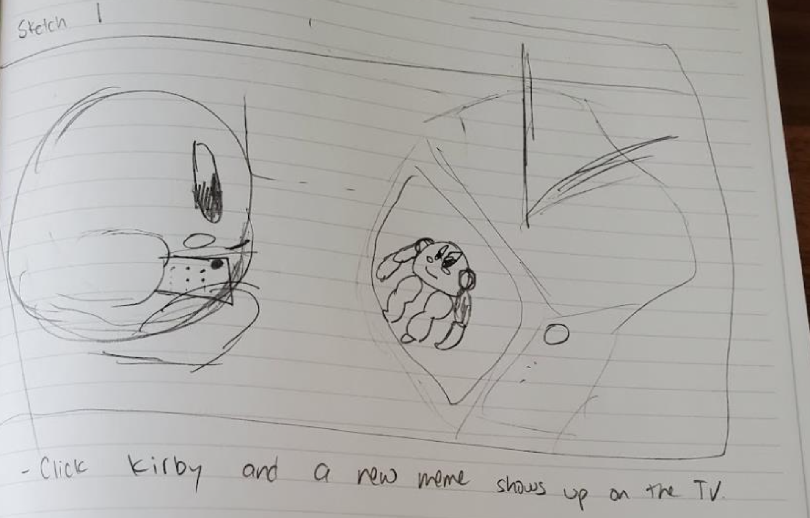
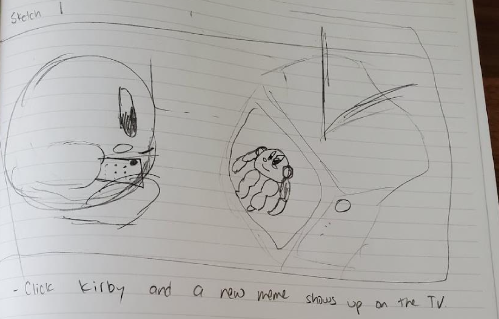

Kirby Button
a. Different Kirbies: ice Kirby, sleeping Kirby, fire Kirby, etc.
b. M tomato as the button


 3. a) Feed Kirby Button Variation 1 by Marela
3. a) Feed Kirby Button Variation 1 by Marela
 3. b) Feed Kirby Button Variation 2 by Marela
3. b) Feed Kirby Button Variation 2 by Marela
 3. c) Feed Kirby Button Variation 3 by Marela
3. c) Feed Kirby Button Variation 3 by Marela

 
